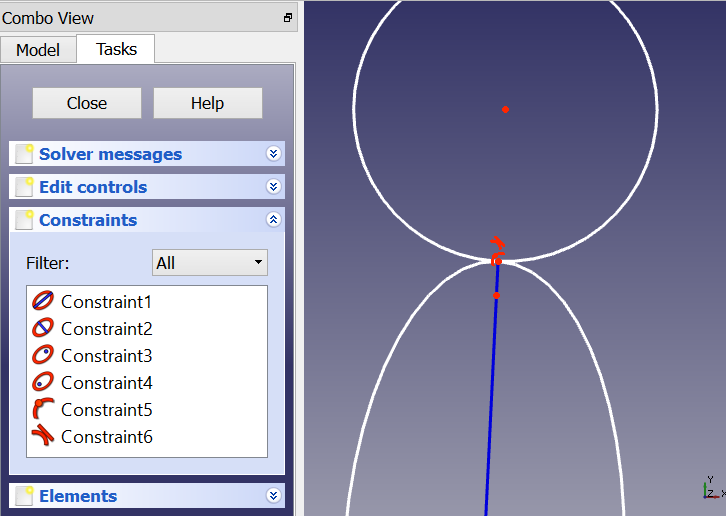

Sketcher helper constraint/bg
Преглед


A helper constraint is a regular constraint that is needed as a part of a more complex constraint, and is exposed in the user interface to assist dealing with redundancy. For example, for the refraction constraint, the two lines that represent rays of light need to be connected (coincident constraint), and the joint must lie on the interface (point-on-object constraint).
Helper constraints are added automatically when they are needed. The decision for if they are needed is currently made by evaluating the helper constraint error for the current state of the geometry (this may change in future versions). If the error is small enough, the constraint is considered to be unnecessary, and is not added. In some cases, this logic can lead to errors (the constraint can be satisfied by accident, which can easily happen when Sketcher grid snap is on).
If this happens (a helper constraint is missing, and the required conditions is not satisfied otherwise), the complex constraint will be broken. It will do something, but the actual behavior is undefined. Such a broken constraint can be repaired by adding the missing helper constraint manually.
Helper constraints are currently required for:
- Tangent/collinear constraint (in tangent-via-point mode two point-on-object constraints are needed)
- Perpendicular constraint (in perpendicular-via-point mode two point-on-object constraints are needed)
- Angle dimension (in angle-via-point mode two point-on-object constraints are needed)
- Refraction constraint (coincident constraint and point-on-object constraint are needed)
Scripting
When constraints requiring helpers are added from Python, no helper constraints are automatically added. One can replicate the automatic decision-making of the UI commands in a script by testing the following functions, specifically added for the purpose and used in the UI routines:
Sketch.isPointOnCurve(icurve,x,y)
isPointOnCurve tests if a virtual point, given by sketch coordinates x,y (float values), happens to satisfy a virtual point-on-object constraint - i.e. lies on curve specified by curve index icurve. Returns True if the point is on curve, and False if it doesn't.
Sketch.calculateConstraintError(iconstr)
calculateConstraintError evaluates an error function of a constraint specified by its index iconstr in the sketch. If there is only one error function in the constraint, the return value is the signed return value of the error function. If there is more than one error function associated with the constraint (i.e. the constraint removes more than one degree of freedom), the return value is the RMS of all the error functions (always positive).
- General: New Sketch, Edit Sketch, Attach Sketch, Reorient Sketch, Validate Sketch, Merge Sketches, Mirror Sketch, Leave Sketch, Align View to Sketch, Toggle Section View, Cancel Editing, Stop Operation, Grid, Snap, Rendering Order
- Geometries: Point, Polyline, Line, Arc From Center, Arc From 3 Points, Elliptical Arc, Hyperbolic Arc, Parabolic Arc, Circle From Center, Circle From 3 Points, Ellipse From Center, Ellipse From 3 Points, Rectangle, Centered Rectangle, Rounded Rectangle, Triangle, Square, Pentagon, Hexagon, Heptagon, Octagon, Polygon, Slot, Arc Slot, B-Spline, Periodic B-Spline, B-Spline From Knots, Periodic B-Spline From Knots, Text, Toggle Construction Geometry
- Constraints:
- Dimensional Constraints: Dimension, Horizontal Dimension, Vertical Dimension, Distance Dimension, Radius/Diameter Dimension, Radius Dimension, Diameter Dimension, Angle Dimension, Lock Position
- Geometric Constraints: Coincident Constraint (Unified), Coincident Constraint, Point-On-Object Constraint, Horizontal/Vertical Constraint, Horizontal Constraint, Vertical Constraint, Parallel Constraint, Perpendicular Constraint, Tangent/Collinear Constraint, Equal Constraint, Symmetric Constraint, Block Constraint, Group Constraint, Refraction Constraint
- Constraint Tools: Toggle Driving/Reference Constraints, Toggle Constraints
- Sketcher Tools: Fillet, Chamfer, Trim Edge, Split Edge, Extend Edge, External Projection, External Intersection, Carbon Copy, Select Origin, Select Horizontal Axis, Select Vertical Axis, Move/Array Transform, Rotate/Polar Transform, Scale, Offset, Mirror, Remove Axes Alignment, Delete All Geometry, Delete All Constraints, Copy Elements, Cut Elements, Paste Elements
- B-Spline Tools: Geometry to B-Spline, Increase B-Spline Degree, Decrease B-Spline Degree, Increase Knot Multiplicity, Decrease Knot Multiplicity, Insert Knot, Join Curves
- Visual Helpers: Select Under-Constrained Elements, Select Associated Constraints, Select Associated Geometry, Select Redundant Constraints, Select Conflicting Constraints, Toggle Circular Helper for Arcs, Toggle B-Spline Degree, Toggle B-Spline Control Polygon, Toggle B-Spline Curvature Comb, Toggle B-Spline Knot Multiplicity, Toggle B-Spline Control Point Weight, Toggle Internal Geometry, Switch Virtual Space
- Additional: Sketcher Dialog, Preferences, Sketcher scripting
- Getting started
- Installation: Download, Windows, Linux, Mac, Additional components, Docker, AppImage, Ubuntu Snap
- Basics: About FreeCAD, Interface, Mouse navigation, Selection methods, Object name, Preferences, Workbenches, Document structure, Properties, Help FreeCAD, Donate
- Help: Tutorials, Video tutorials
- Workbenches: Std Base, Assembly, BIM, CAM, Draft, FEM, Inspection, Material, Mesh, OpenSCAD, Part, PartDesign, Points, Reverse Engineering, Robot, Sketcher, Spreadsheet, Surface, TechDraw, Test Framework
- Hubs: User hub, Power users hub, Developer hub